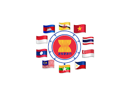

Bilateral adalah Kerjasama yang dilakukan oleh 2 negara.

Regional adalah kerjasama negara yang berada di satu lingkungan dan atau kawasan. Misalnya ASEAN yang merupakan suatu kerjasama negara-negara di Asia tenggara.

Multilateral adalah kerjasama negara yang mencakup semua negara di dunia ini. Misalnya : G20, WTO,PBB.
Apa itu SDGS?Salah satu jenis kerjasama Multilateral adalah SDGs. Apa itu SDs? SDGs adalah Sustainable Development Goals. Merupakan suatu organisasi perserikatan bangsa-bangsa (PBB) yang memiliki tujuan untuk membangun berkelanjutan kestabilitasan negara. Memiliki 17 tujuan, yang dibuat berlaku untuk semua orang,semua kalangan dan semua negara.
Manfaat : Untuk menciptakan kestabilan dan kesetaraan bagi semua orang. Salah satu prinsip SDGs dalam integrasi, universal, dan leave no one behind. SDGs diharapkan akan berdampak kepada semua orang, kalangan atas, menang maupun kalangan bawah. SDGs ini memiliki banyak program yang pastinya akan dilaksanakan sesuai kebutuhan dan tujuannya.
Dari ke-17 Tujuan SDGs tersebut, yang akan saya jelaskan sekarang adalah tujuan ke 3. Kesehatan adalah hal terpenting. Namun banyak orang-orang terutama di kalangan menengah kebawah yang kurang mendapatkan akses kesehatan. No 3 ini memiliki goals yaitu :
Oleh karena itu contoh dan upaya yang bisa dilakukan adalah :

SDGs Merupakan suatu organisasi perserikatan bangsa-bangsa (PBB) yang memiliki tujuan untuk membangun berkelanjutan kestabilitasan negara. SDGs kepanjangannya adalah Sustainable Development Goals. Memiliki 17 tujuan, salah satunya adalah Konsumsi dan produksi yang bertanggung jawab.
NO. 17 Konsumsi dan Produksi yang Bertanggung jawab
Pada umumnya semua masyarakat di dunia ini melakukan proses/tindakan jual beli. Dalam proses itu ada yang dinamakan konsumen dan produsen. Konsumen adalah penikmat barang/jasa dari produsen, dan produsen yang menyediakan barang/jasa tersebut. Kebutuhan masyarakat di dunia ini yang banyak menyebabkan manusia memiliki sifat yang konsumtif. Oleh karena itu SDGs menetapkan tujuan ke 12 yaitu memastikan pola konsumsi dan produksi yang berkelanjutan dan stabil. Konsumsi dan produksi juga dapat berdampak akan kemiskinan dan kesenjangan sosial. Maka dari itu harus ada rancangan yang jelas dalam melaksanakan tujuan no 12 SDGs ini.
Ini tidak hanya untuk mengatur dan menyeimbangkan konsumsi dan produksi masyarakat namun juga memperhatikan memisahkan pertumbuhan ekonomi dari tindakan merusak lingkungan, dan sehingga melestarikan sumber daya alam,dan sustainable living.Contoh konkret yang terjadi adalah “Setiap tahun, diperkirakan sepertiga dari semua makanan yang diproduksi – setara dengan 1,3 miliar ton yang bernilai sekitar $1 triliun – berakhir membusuk di tempat sampah konsumen dan pengecer, atau rusak karena praktik transportasi dan panen yang buruk.” Hal ini sangatlah parah, mengingat tujuan kegiatan ini untuk jarak panjang.
Berikut adalah beberapan hal yang dilakuakn dan direncanakan oleh SDGs dalam melaksanakan tujuan ini :
Apa itu SDGS ? Hubungan international? Website ini akan memberikan informasi menegenai hal-hal hubungan international negara! selamat membaca
Untuk itu silakan pencet tombol SDGS ips atau SDGS PPKN ya! Di dalam halaman ini ada informasi mengenai hubungan bilateral Indonesia dengan Belanda...
Belanda di indonesia༄˖.ೃ࿔*:･

Indonesia dan belanda memiliki hubungan sedari dulu ( zaman penjajahan). Sejarahnya adalah ketika belanda membangun dan memonopoli perdagangan rempah-rempah di Indonesia yaitu dengan berdirinya VOC. Setelah itu banyak kerjasama yang dilakukan oleh Indonesia-Belanda. Belanda negara dari benua Eropa yang juga merupakan
Peranan indonesia dalam SDGs adalah mendukung kesejahteraan global dan pembangunan ekonomi. Pembangunan Ekonomi berkelanjutan dengan adanya kerjasama ekonomi, investasi dan lainnya. Salah satu kerjasama bilateral negara dengan Indonesia adalah negara Belanda.
1. Ekonomi = Belanda dan indonesia bekerjasama dalam ekspor dan impor Indonesia ke belanda misalnya Kopi,Produk pertanian dan minyak kelapa sawit. Hal ini terjadi karena di Indonesia lebih banyak SDAnya dan Belanda sudah bekerjasama sejak jaman dahulu kala setelah menjajah Belanda membuat kerjasama ini. Impor Belanda ke Indonesia misalnya Mesin-Mesin Industri, Alat transportasi serta teknologi medis.Oleh karena itu dengan adanya kerjasama ekonomi ini masing-masing negara dapat melengkapi kebutuhannya.
2. Pendidikan = Adanya kerjasama beasiswa dan riset. Bagi para murid yang berprestasi Belanda dapat menjadi tujuan pendidikan yang baik, karena di Belanda pendidikan lebih maju maka dengan adanya beasiswa memudahkan para pelajar di Indonesia untuk belajar disana. Riset yang dapat menambah dan melengkapi pengetahuan para peneliti di Indonesia.
3. Investasi = investasi dari segi infrastruktur Sejumlah proyek investasi Belanda di Indonesia, antara lain, pembangunan pabrik susu Frisian Flag di Jawa Timur, investasi Shell di sektor hilir migas, pembangunan terminal di Pelabuhan Tanjung Priok, pengembangan energi terbarukan, dan pembangunan infrastruktur.
Manfaat
౨ৎ⋆Dampak positif𐙚⋆♡ :
